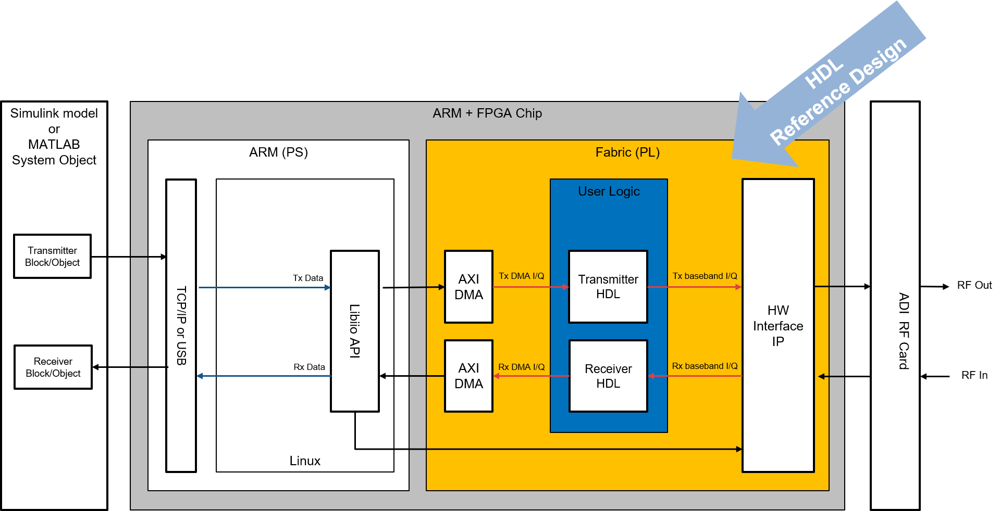
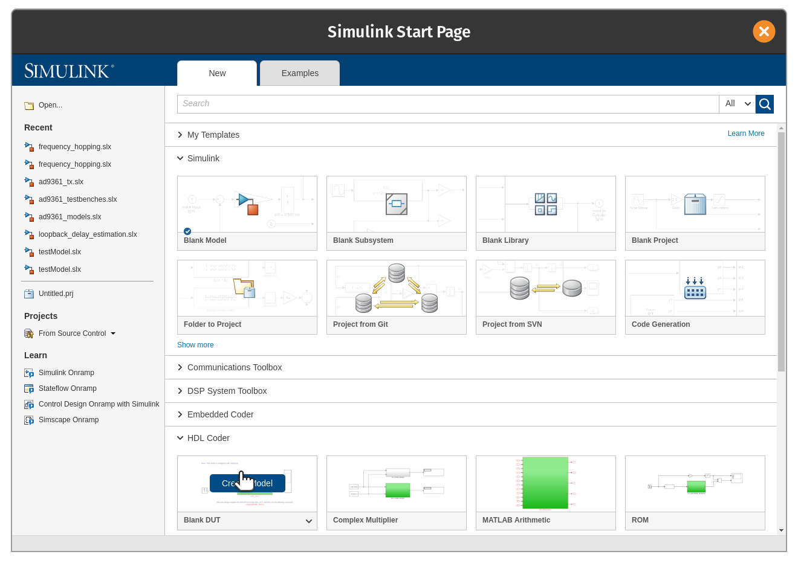
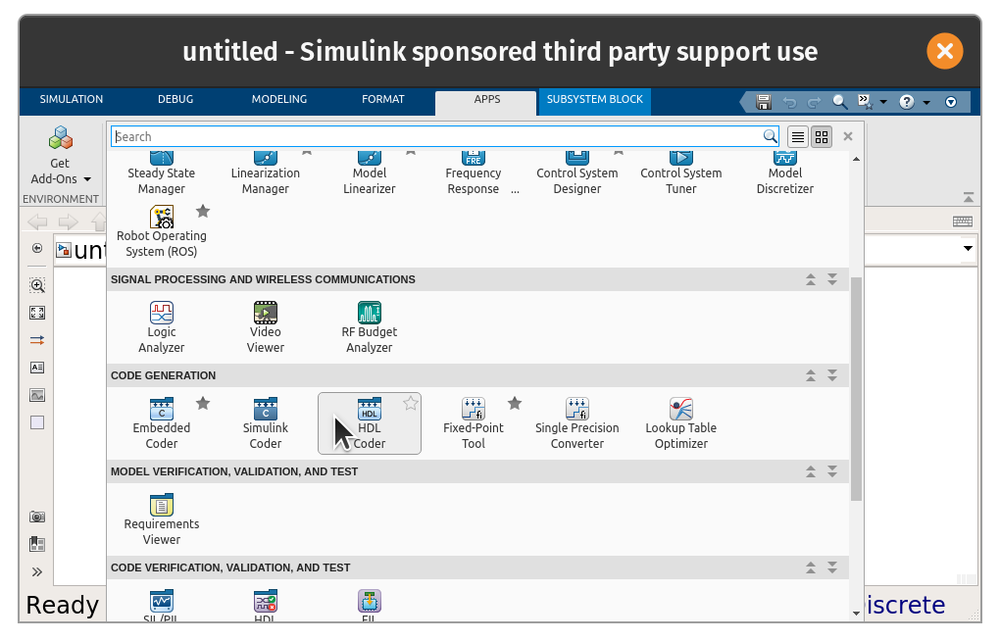
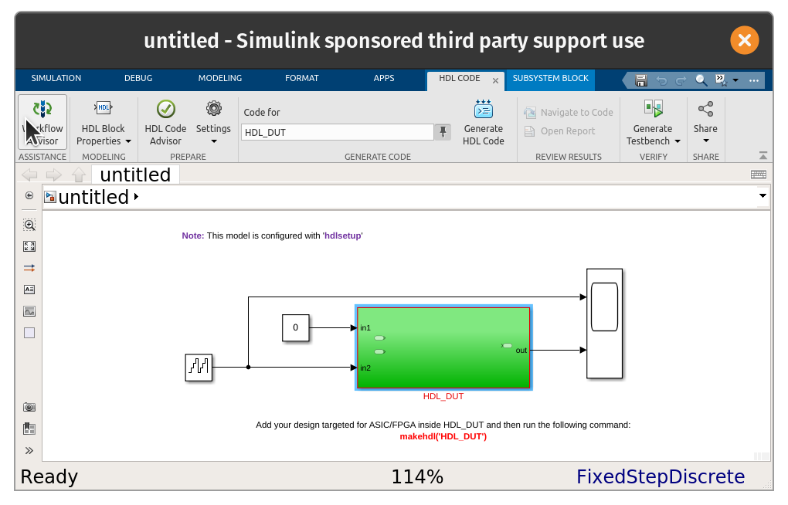
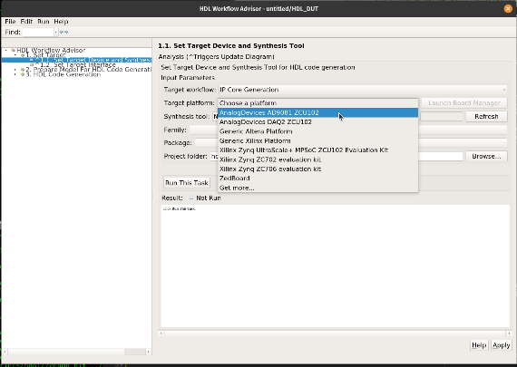
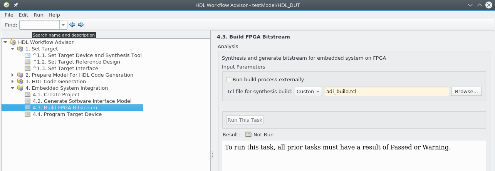

HDL Targeting with HDL-Coder
High-Speed Converter Toolbox supports the IP Core generation flow from MathWorks which allows for automated integration of DSP into HDL reference designs from Analog Devices. This Workflow will take Simulink subsystems, run HDL-Coder to generate source Verilog, and then integrate that into a larger reference design. The figure below is a simplified block diagram of a SoC (Fabric+ARM) device, where specialized IP are inserted into the receive and transmit datapaths. This is supported on specific FPGA families and high-speed based reference designs. This support is based on the Zynq HDL-Coder and support

Recommended Review
Getting Started
The available reference designs are DAQ2/ZCU102, AD9081/ZCU102, AD9434/ZC706, AD9783/ZCU102, and AD9208/VCU118. AD9739A/ZC706, FMCJESDADC1/ZC706, and AD9265/ZC706 targeting is unavailable in hdl_2026_r1; their MATLAB streaming interfaces remain available.
To perform targeting will require FPGA vendor tools for the FPGA system. For Xilinx this will be Vivado and the toolbox will require specific versions for each release. For the current release this is Vivado 2025.1. Using other versions are not supported. BOOT.BIN generation uses bootgen and the bundled carrier-specific boot files on Windows and Linux; these boot files are unchanged by this toolchain upgrade.
The development target is MATLAB R2025b with HDL hdl_2026_r1. MathWorks tests R2025b HDL Workflow Advisor with Vivado 2024.1, while this HDL branch requires Vivado 2025.1. This pairing requires toolbox validation. The synthesis test workflow explicitly allows the unsupported tool version and emits a warning. In HDL Workflow Advisor, using 2025.1 requires opting into Allow unsupported version; it is not a MathWorks-supported pairing. Keep the selected reference-design version equal to the installed Vivado version.
Once you have the installed the necessary third-party tools MATLAB needs to be told where they are installed by use of the hdlsetuptoolpath command. For Windows the following MATLAB command can be used:
hdlsetuptoolpath('ToolName', 'Xilinx Vivado', 'ToolPath', 'C:\Xilinx\Vivado\2025.1\bin\vivado.bat');
or Linux:
hdlsetuptoolpath('ToolName', 'Xilinx Vivado', 'ToolPath', '/opt/Xilinx/Vivado/2025.1/bin/vivado');
Please change the tool path if it is different on your system.
Checking For Supported Designs
To verify that the ADI reference designs are available to HDL Workflow Advisor a Simulink model needs to be opened. To do so launch Simulink with the following command:
simulink
After it launches open a “Blank DUT” model from the “HDL Coder” dropdown of the Simulink Start Page.

After the model opens, click on the green subsystem to select it. Then open the “Apps” tap, open the apps menu and scroll down to HDL-Coder.

This will open the HDL-Coder menu, from here the Workflow Advisor is selectable. Click on it to launch the advisor.

Once launch go to Step 1.1 on the left side column. Then on the right side of the window select “IP Core Generation” for “Target Workflow.” Then the ADI reference designs should be available in the “Target platform” menu as so:

Moving Bitstreams To Hardware
Unlike support packages provided by MathWorks, the update process for the bitstreams requires the creation of a BOOT.BIN file which will be compatible with the ADI SD card. BOOT.BIN’s contain the bitstream (system_top.bit), FSBL, and u-boot for ADI platforms.
First, make sure you have a valid SD card for your platform with the necessary device tree and kernel image selected. Follow this process here.
Once your SD card is ready, in step 4.3 “Build FPGA Bitstream” of HDL Workflow Advisor select a custom Tcl file for synthesis build. Utilize this adi_build.tcl file for Linux or this adi_build_win.tcl file for Windows located within the BSP as your custom tcl file.

Once the bitstream is built it will generate the BOOT.BIN necessary for booting your system. Place the generated BOOT.BIN in the root of your ADI SD card’s BOOT partition.